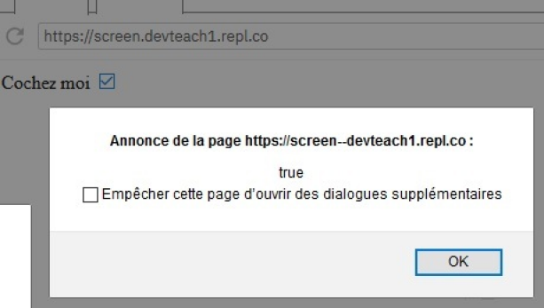
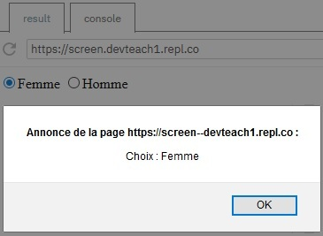
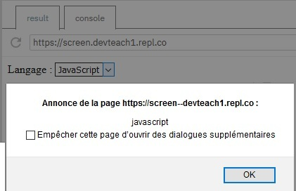
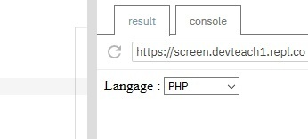

Nous allons voir comment afficher et modifier la valeur des autres types de champs présents dans un formulaire, à savoir les cases à cocher, les boutons radio et les listes déroulantes.
Comme pour les champs de type texte, nous pourrons accéder à leur valeur grâce à la propriété value de l'élément du DOM correspondant. En modifiant value, nous pourrons modifier la valeur choisie.
Nous pourrons lier l'événement change permettant de détecter la modification du choix par l'utilisateur.
Les éléments de formulaire donnant lieu à un choix de l'utilisateur ont en commun l'événement change.
Ici, nous ajoutons un écouteur d'événement change à notre case à cocher. De plus, pour détecter si la case est cochée ou non, nous utiliserons la propriété checked de l'objet Event de JavaScript.
See the Pen Untitled by OpenSpirit (@OpenSpirit) on CodePen.
Pour les boutons radio, l'utilisateur dispose de plusieurs choix de réponses, mais ne peut en sélectionner qu'une. Nous devons donc placer un écouteur d'événements sur chacun des choix possibles.
See the Pen Untitled by OpenSpirit (@OpenSpirit) on CodePen.
Nous pouvons aussi forcer le choix en assignant une valeur à value. Attention, cette option doit exister au niveau des choix utilisateurs.
De la même manière que pour les boutons radio, nous allons placer un écouteur d'événement change et utiliser la propriété value pour afficher le choix de l'utilisateur.
See the Pen Untitled by OpenSpirit (@OpenSpirit) on CodePen.
Nous pouvons aussi forcer le choix en assignant une valeur à value. Attention, cette valeur doit exister dans la liste déroulante.
See the Pen Untitled by OpenSpirit (@OpenSpirit) on CodePen.
